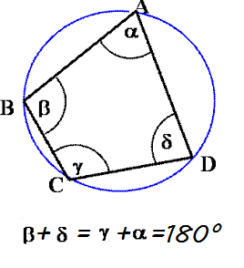

Azok a négyszögek amelyeknek minden oldala a kör húrja. A húrnégyszögek oldalfelező merőlegesei egy pontban, a köré írt kör középpontjában metszik egymást. Egy négyszög csak akkor húrnégyszög ha szemközti szögeinek összege 180°.
húr:
A kör ív két pontját összekötő szakasz. (Az átmérő a leghosszabb húr.)
